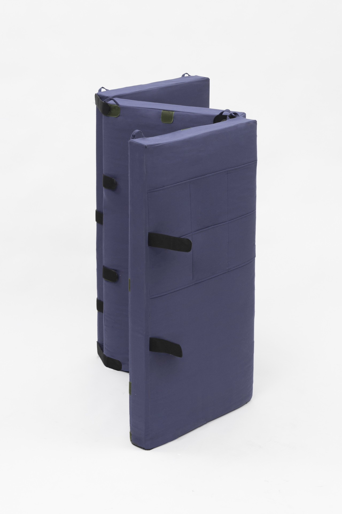
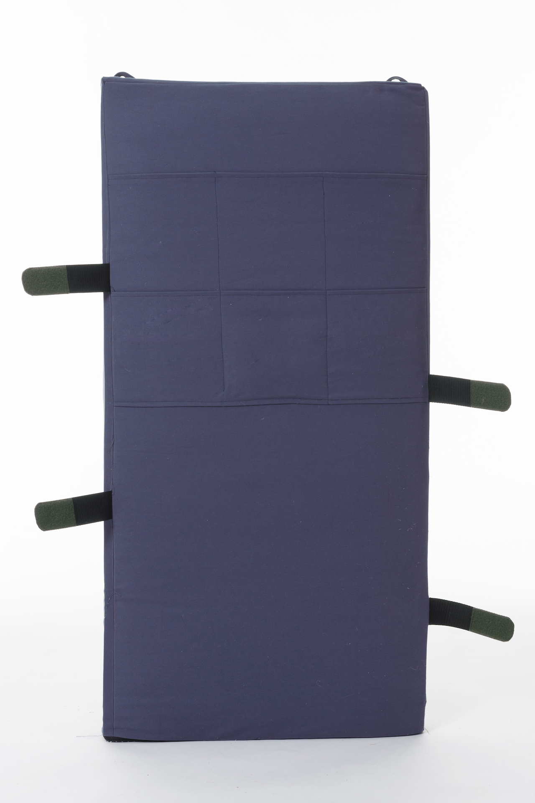
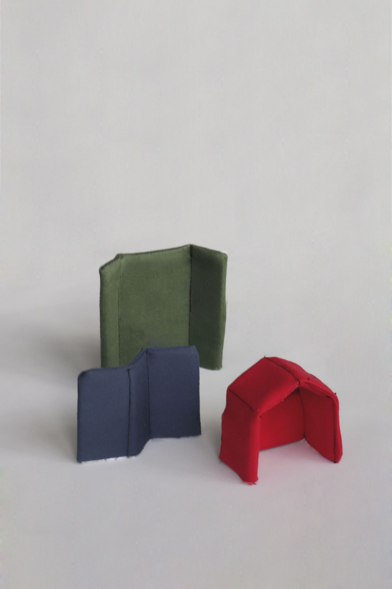
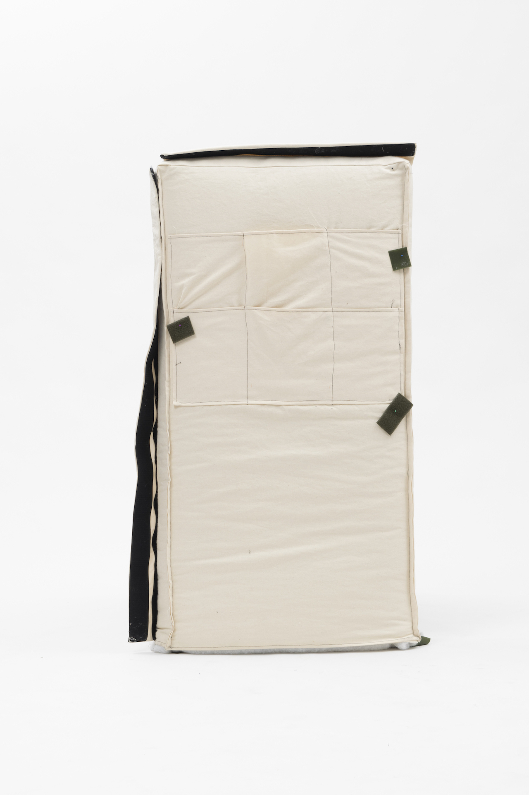

<!DOCTYPE html>
<html>
</html>

<head>
  <meta charset="UTF-8">
  <title>Juliette Collin</title>
  <meta name="viewport" content="width=device-width, initial-scale=1">
  <link rel="stylesheet" href="juliettecollin-projetsS9.css">

</head>

<body>
<section class="content-container ">

  <div class="content-orange">

        <div class="header">Juliette Collin © 2020</div>

        <a href="juliettecollin-projetsS9-en.html" class="retour">Back</a>
        <a href="#abri" class="texte-projet">Cabanes<br>
            <em>2018-19</em><br>
            The Cabanes project is a range of acoustic walls designed for Paris City Hall nurseries. Designed as a construction game, the different configurations correspond to the different needs of the nursery : meeting a parent, separating spaces during a meal or isolating oneself to read a book. They give a playful and practical dimension to this object in order to integrate it into the nursery’s environment.<br>
          </a>
        </div>

  <div class="content-violet">

    <div class="flex-container-projet">
      <div>
                  
      </div>

      <div>
        
      </div>

      <div>
        
      </div>
      <div>
        
      </div>

      <div>
        
      </div>
<div>
        
      </div>  
      <div>
        
      </div>
      <div>
        
      </div>
      

     
    


    </div>        

  </div>
</section>    

</body>

